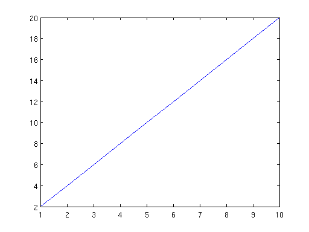

script illustrating the function publish
Contents
Task 1: plot a line with slope 2
a = [1:10]; b = a*2; plot(a,b)
Task 2: plot a parabola
not clear if cells are needed for the publishing
plot(a,a.^2)
Task 3: output results from a loop
- use running variable ii instead of i - content of array c will be shown in the published code
c = []; for ii=1:10 c = [c ii^2] end
c =
1
c =
1 4
c =
1 4 9
c =
1 4 9 16
c =
1 4 9 16 25
c =
1 4 9 16 25 36
c =
Columns 1 through 6
1 4 9 16 25 36
Column 7
49
c =
Columns 1 through 6
1 4 9 16 25 36
Columns 7 through 8
49 64
c =
Columns 1 through 6
1 4 9 16 25 36
Columns 7 through 9
49 64 81
c =
Columns 1 through 6
1 4 9 16 25 36
Columns 7 through 10
49 64 81 100
Task 4, use a function
- code of used function will not be shown in the published code. - Comment that function squarex.m is used.
clear x y; x = [4:4:70]; for ii=1:length(x) y(ii) = squarex(x(ii)); end plot(x,y)